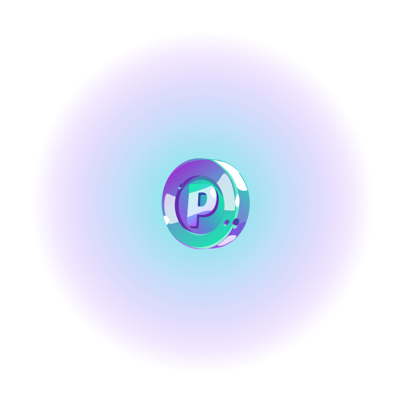

WHAT IS AMO.points?
Amo.Points - a unified platform for communities to raise the floor price of its collection and reward active holders
No more dealing with multiple platforms
Get everything you need in one place - Amo.Points
By listing your project on AmoPoint, you can boost its recognition and Involve new holders:
- Staking allows to reward for loyalty
- Activities enable you to enhance the project's value and receive financial support from holders
- Auctions is a way to generate funds and grow the community